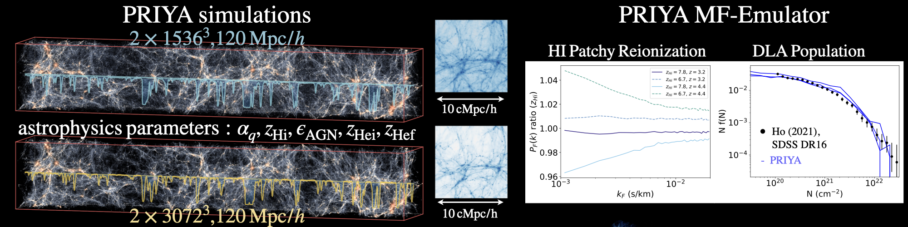

About Me
PhD Candidate and NASA FINESST FI in the department of Physics and Astronomy at UC Riverside.
I am currently a PhD student at UC Riverside (2018-), advised by Simeon Bird. I will move to University of Michigan as a Leinweber Center for Theoretical Physics (LCTP) postdoctoral fellow in 2024 Fall. Broadly speaking, my interest focuses on analyzing astronomical data using novel Bayesian methods. At UCR, I collaborate with Simeon Bird on multi-fidelity machine learning techniques, enabling Bayesian inference using expensive cosmological galaxy formation simulations (see PRIYA-MF: arXiv:2309.03943). I am a Future Investigator and supported by a NASA FINESST award, as highlighted in the Inside UCR story. Besides, I collaborate with Roman Garnett (WUSTL CSE) on Bayesian machine learning in large spectroscopic surveys, producing reliable catalogs of Damped Lyman-alpha (DLAs) and metal absorbers (arXiv:2003.11036). Our GP-DLA technique has been adopted by DESI for finding DLAs and producing reliable 1D flux power spectrum. Additionally, I am interested in using hierarchical population inference to analyze LIGO's GW data, shedding light on the formation channels for the binary black holes (with Will Dawson and Scott E. Perkins from LLNL).
Ongoing projects
I am currently a Graduate Fellow at Carnegie Observatories, working with Fakhri S. Zahedy on improving the GP-DLA technique to build an automated finder for Lyman limit systems, which is traditionally very hard to identify in the low-resolution Lyman-alpha forest data. Also, continuing on my previous emulator works, I am also working on using PRIYA simulations to infer cosmological parameters using P1D of the high-resolution spectroscopic survey data (e.g., KODIAQ, XQ100).
Animations-you-might-like
I believe a video is worth a million words. So instead of writing lots of words, I made some videos. There are ~6 million words below.
(Background image: Gas particles in Astrid simulation model (120 cMpc/h).)
(Demo: Multi-fidelity emulation in 1D toy data (See jibanCat/nargp_tensorflow).)
(Demo: Bayesian optimization demo, with an increasing observational noise.)
(Demo: Inferring quasar redshift using a data-driven Gaussian process (2006.07343).)
(Demo: Inferring damped Lyman alphas absorption (DLAs, typically neutral hydrogen gas around high-z dwarf galaxies) using Gaussian processes and Bayesian model selection (2003.11036).)
MF-Box: Multi-fidelity and multi-scale emulation
We have extended the idea of multi-fidelity modeling and developed MF-Box (arXiv:2306.03144), a method for modeling N-body simulations that incorporates multiple particle loads and physical scales. By using two types of cost-effective simulations, L1 and L2, we construct a model that accurately predicts summary statistics derived from the high-fidelity simulation across a wide range of cosmological parameter space. L1 simulates a low particle load in a large volume, while L2 simulates a low particle load in a small volume. By combining the simulations from different volumes, we achieve precise interpolation in a high-dimensional parameter space across scales, significantly reducing computational costs compared to running an additional high-fidelity simulation. MF-Box is versatile and can be applied to various simulation suites, providing an effective solution for interpolating simulations across multiple physical scales using affordable approximations.
PRIYA: Simulation suite for Lya forest based on Astrid simulation model

Based on the concept of multi-fidelity emulation, our research group has designed PRIYA (arXiv:2306.05471), a multi-resolution simulation suite that spans a 9-dimensional parameter space, including cosmological and astrophysical/thermal parameters. We ran 48 low-resolution simulations with 1,536^3 particles in a 120 Mpc/h box, along with 3 high-fidelity simulations with 3,072^3 particles. These simulations include a comprehensive physics model for galaxy formation based on Astrid, including supernova and AGN feedback, resulting in a realistic population of DLAs. By combining the simulations from these 48 low-resolution simulations with the 3 high-resolution simulations, we have developed a multi-fidelity emulator that achieves interpolation with less than 1% error. This emulator provides a resource-efficient way to explore how summary statistics change based on our galaxy formation model and cosmology. Moreover, it will be used for Bayesian inference in future analysis of Lyman alpha forest data.
Gaussian process DLA finder

I have an interest in using machine learning techniques to model the emissions of quasars, which are the lights emitted by supermassive black holes. I have made improvements to a Gaussian process (GP) based model originally developed by Roman Garnett (arXiv:1605.04460). My modifications in Ho-Bird-Garnett (2021) allow for the identification of damped Lyman alpha absorbers (DLAs) in the intergalactic medium, accounting for sub-DLAs and also include a model for a quasar meanflux model (arXiv:2003.11036, arXiv:2103.10964). Furthermore, our research involves performing probabilistic inference on quasar redshifts using the Gaussian process based model, as detailed in the work by Fauber et al. (2020) (arXiv:2006.07343).
(Thanks Yongda Zhu for sharing the awesome XQR-30 image made by Dr. Anna-Christina Eilers, which I used it as a reference to make the above DLA figure.)
Multi-fidelity emulation for cosmological simulations
The concept of multi-fidelity modeling is straightforward. We employ many inexpensive approximations to explore different parameter settings, and only rely on a handful of costly examples to improve the accuracy of those approximations. To illustrate this, consider the hiring process at a university. We have numerous graduate student workers who tackle the groundwork of exploring various research topics, while only a few professors are needed to provide guidance and refine the outputs of the students. You can find more details in the paper by Ho-Bird-Shelton (2021) available at arXiv:2105.01081. Recently, we have applied the multi-fidelity technique to emulate Lyman-alpha forest, see Fernandez-Ho-Bird (2022) arXiv:2207.06445. As part of my FINESST grant, I will continue utilizing multi-fidelity methods to model halo mass functions and weak lensing statistics.
Motivation
My research is driven by my passion to ease the workload in academia. Over time, I have noticed many people becoming discouraged with research because they were told that spending long hours on tedious tasks was the only way to produce results. However, I strongly believe that we can use automated tools and better models to replace repetitive work, allowing academia to focus more on creative thinking.